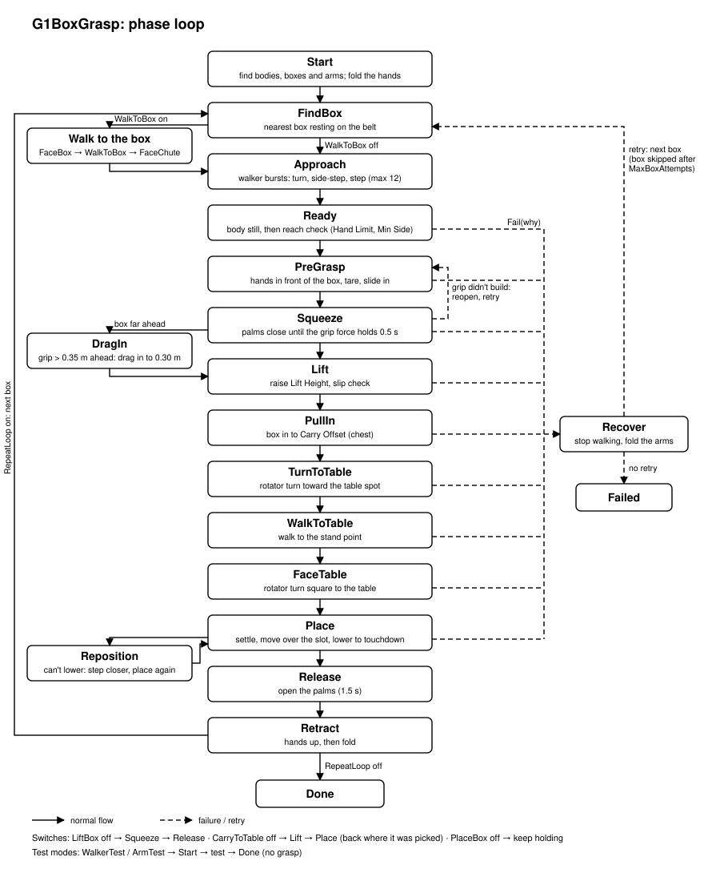

81c4fea, 8863226). It hands straight over to the existing grasp: the left hand stays pinned on the box and only the right hand comes in (commit 9a291ce). The right hand now arrives and both palms squeeze. The box still escapes, because the effective friction between the hands and the box is about the box's own 0.01, not the hand's. A high-priority friction class has just been added to the robot model's hand geoms to fix that. It is not yet tested.
Robot and engine. Unitree G1 with three-finger hands (ContentVault/Robots/UnitreeG1ThreeFingers/g1_three_fingers.xml) in LuckyEngine (Hazel editor with MuJoCo physics). The legs and waist are run by learned policies in slots: walker = 1, rotator = 2. The arms use a motion-graph LimbIK whose end effectors are left_grasp_site and right_grasp_site. The IK owns the shoulders and the elbow. The script owns the wrists (a closed-loop wrist servo) and the thumb and finger bases.
Files. The controller is a single file, g1_grasp.cs (about 3,260 lines, 83 inspector fields). It's developed in the repo and copied into the engine project's Assets/Scripts/Client/Source/. The only difference between the two copies is ArmReach (0.50 in the repo, 0.65 in the engine). The phase diagram is g1_grasp_flow.svg. Logs are in /tmp/LuckyEngine/Logs/APP.log, and every controller line starts with [G1].
Workflow used throughout. Each change was edited in the repo, formatted with csharpier, compile-checked with dotnet build G1BoxGrasp.csproj against the engine's Hazel-ScriptCore.dll (every build ended with 0 errors), and synced to the engine copy. The user then ran the scene, and the next step was decided from the log. Analysis-only requests were answered without code changes. Commits were made only when asked.
A phase machine drives everything: Advance() is the only place the phase changes, every phase has a progress watchdog, and Fail(why) leads to Recover. Figure 1 is the black-and-white loop diagram made in this period, from the generator script flow.py, checked by rendering with headless Chrome. It shows the resting-box pipeline. The catch path added later enters it at PreGrasp (section 8, Figure 3).

g1_grasp_flow.svg). Main chain: Start → FindBox → Approach → Ready → PreGrasp → Squeeze → Lift → PullIn → TurnToTable → WalkToTable → FaceTable → Place → Release → Retract. Optional walk to the box, DragIn and Reposition on the left. The dashed Fail(why) bus leads to Recover, then a retry from FindBox or Failed. A failed squeeze retries through PreGrasp. The footer lists the phase switches and test modes.The grasp itself works like this. Reachable() plans the grip and checks reach: every hand target within HandLimit% of the arm, measured from the standing pose, and each grip point at least MinSide off the body's centre line. Both hands glide to pre-grip points 10 cm in front of the box, 3 cm wider than the grip. After a tare they slide in along the side faces, with ApproachGap of air between each palm and its face. Squeeze is admittance control on palm force: the gap target goes negative down to −MaxSqueezeDepth until the palm-only force reaches the required squeeze, factor × m·g / (2μ). The index and middle fingers curl while the palm is on its face. A grip that stalls at full depth is reopened and retried (MaxSqueezeTries).
Most of the requests in the first part asked for a constant to be put in the inspector so it could be tuned without code. Everything added is listed in Appendix A. The decisions that mattered:
k_Comfort. The grip is raised up the box until each grasp site is within this share of the arm.BeltClearance + PalmBelow + (1+Side)·k_ThumbStagger + GripLift, so the left hand sits 3.6 cm higher than the right so the straight thumbs pass each other.That stage was committed as a571ea4 "good enough pipeline". The commit also includes the redrawn phase diagram.
| Run / question | What the log showed | Explanation / outcome |
|---|---|---|
| Six runs on 16 Oct | 2 successes. Short side-step bursts stalled for a box far off-centre. The rotator's carry turn made the box slip. A narrow box was blocked by MinSide and looped. One run was a stale build. | Several fixes proposed but not done: escalate stalled bursts, gentler carry turns, stop chasing a pushed box during PreGrasp, wrap the thumbs after the palms are on. |
| HandLimit > 100 (110) | The slowdown and twisting started on the frame the per-frame IK target crossed 100% (right hand 1.04 m/s, sim 0.13× real time). Then the hands pushed the box, which moved the goals, which pushed the box again. | A target beyond full stretch is an IK singularity. Fixed by the separate IKTargetLimit cap at 95%. |
| 17:42, cap at 95% | No slowdown. Failed "right hand short": the hand was 0.6 cm over the box top against PlacedTop 0.01, with ReachTolerance 0.05 borderline. | The tolerances were too strict, which led to exposing all of them (section 3). |
| 15:54, box halved (0.152 wide) | Rejected by MinSide 0.11: a grip point sat 0.10 m from the centre line. After MaxBoxAttempts = 5 the box was skipped and FindBox stalled. | The arm sweeps showed IK accuracy falls off within about 0.12 m of the centre line, so narrow boxes were blocked by design. |
| 16:00, squeeze not working | ThumbGripDeg 15 drove the thumb tips into the front face. They pinned the hands with friction, pushed the box 3.3 cm away and tipped it. The palms stayed 2.5–3 cm off. The right arm's IK landed 1.9 cm outward on the narrow box, against 0.5 cm inward on the wide one. | Keep the thumbs straight (0) for the squeeze. |
| Narrow box always leaves a gap | The same gap is commanded for both widths, but the arm's tracking error near the centre line uses up the squeeze depth. | MaxSqueezeDepth exposed. |
| 16:41, 0.15 box, depth 0.05 | Approach left the box 4.4 cm off-centre, inside AlignSide 0.06. The left grip point was 0.07 m from the centre line. During the slide-in the left target moved 3 cm inward but the hand didn't move: lag 0.9 → 4.6 cm, then 7 cm in the squeeze. The left palm stayed 6.6 → 4.2 cm off its face. The right hand gripped (fingers 34 N) and pushed the box, which tipped on the retry. | More depth only moves the target; the arm doesn't follow that close to the centre line. Suggested: AlignSide about 0.015 and MinSide back to 0.11. The real fix would be finer centring steps and checking MinSide at the final grip points instead of the pre-grip ones. |
| Entity | Contents | State |
|---|---|---|
| ConveyorBelt | G1Sort.BeltForce: speed 0.3, direction +Z, for PoolBox_01..10. Writes box qpos each step. | Did nothing: it looks bodies up by tag, but scene bodies are named lucky_body_<entityID>. Even working, a qpos-driven box would pass through a hand. |
| ConveyorGateController | G1Sort.ConveyorGate: weld/unweld a Trapdoor body every 1 s. | Did nothing: no Trapdoor entity, and the same tag lookup. |
| FunnelWall_01/02/03/East | A vertical funnel at x 0.80–0.95, z 0.575–0.725, height 0.88–2.58. | Inside width exactly 0.15 m, the box width, so a box would jam. It sits over the far side of the belt. |
| SpawnMarker | 5 cm cube with a collider inside the funnel. | Would catch a falling box. |
| Belt geometry | x 0.44–1.02 (0.58 wide), z −0.735…1.011, top at about 0.49, friction 1.7, tilted 1° with the low end at −Z. | The robot faces +X, so its left is −Z. A box sliding −Z travels toward the robot's left, which is also the table side. |
Two options were compared:
SetQfrcAppliedByDof. The force has to be zeroed when the box is lifted, because MuJoCo keeps applied forces until they're overwritten.The user chose the slide, and it's the better fit for the catch:
Two requirements came out of the comparison:
| Tilt | μ (box) | downhill accel | 0.4 m/s knock slides | Note |
|---|---|---|---|---|
| 1.9° | 0.01 | 0.23 m/s² | 0.82 m | First scene. A light touch sends the box off the belt. |
| 5° | 0.06 | 0.27 m/s² | 0.14 m | Same speed, much more damping. |
| 8° | 0.11 | 0.30 m/s² | 0.07 m | Keep μ at about 70–80% of tanθ; the pyramidal friction cone tends to stick near the limit. |
The belt was later run at 2.7–3.1°. The measured accelerations, 0.14 m/s² at 3.1° and 0.07 m/s² at 2.7°, match g(sinθ − μcosθ) with μ ≈ 0.04 (the belt's value). The belt also has a slight twist (Rotation Y 0.0099, Z −0.0016), which makes the box drift about 2 cm outward per metre.
The catch took about a dozen log-driven iterations. Each row below is one change and the run that motivated it.
| # | Version | What the run showed | Change made |
|---|---|---|---|
| 1 | Hold the box with WeldBody until the hand is ready, then release | The box started sliding at t=0, ran the whole belt and fell off the end after about 4.3 s. One persistent WeldBody call made in Begin didn't hold the box. The robot then side-stepped toward a box on the floor. | The user dropped the weld: "assume the box starts at the top and accelerates, track it from the start, predict, put the left hand in between". |
| 2 | Track from the first frame and predict; stop spot straight ahead; shift it down the belt if the box would beat the hand | The robot spawned out of reach (pelvis x 0.02, target 151–193% of the arm). The spawn lurch moved the pelvis 0.26 m forward and back and turned it to −34°. The palm came down from above onto the box edge. The box bounced off the stiff palm (0.24 in, −0.50 m/s out) and was pushed outward, x 0.63 → 0.80. | Diagnosis: a stiff arm plus a frictionless belt makes an elastic bounce; the hand came in from above; the robot was too far away. |
| 3 | Side approach, give, measured acceleration | — | Waiting point in front of the path, fingertips clear (site k_CatchFront 0.10 + FrontInset in front of the front face; fingertips reach about 8.5 cm past the site), then a slide straight in. A give that runs with the box and brakes over CatchGive. Acceleration learned from the box's speed changes. |
| 4 | Same | The right hand flailed. CatchPose bypassed the fold smoothing, so its IK target was glued to the lurching pelvis, and its wrist servoed to the box frame. The left hand's slide waited on the right hand's moves (the moving-check looked at both arms). It slid in too late, at 103–110% reach, and the fingers flung the box 0.5 m sideways. | The free hand is parked (smoothed fold, wrist on the heading). The moving-check looks at the stopper only. The slide starts only if the box is ≥ 0.8 s away. |
| 5 | Same | The lurch comes from the spawn: the pelvis starts at 0.79 m and drops to 0.47, then staggers for about 3 s, the same with no catching. The box arrives at 2.7 s. The first-frame shift came from the spawn pose (182%) and could never come back down. | Step 0: wait folded until the body is still, or until the box is so close the hand must go. The spot is fixed in the world once the hand goes. The shift is predicted only once the hand is at its waiting point. |
| 6 | Same | "The catching works, but low friction knocks the box away." The shift jumped 15 cm during the slide, turning it into a 25 cm diagonal sweep through the box's lane. | Shift frozen once the slide starts. Slide needs +0.2 s spare (1.0 s in total). |
| 7 | 5° tilt, μ 0.06 | The hand never got settled in time: the first move was planned from the spawn pose as one fixed 2 s move, and every target change restarted a move of at least 0.5 s. | Continuous tracking: the stopper's IK command eases toward its target at up to CatchHandSpeed, with no restarts. |
| 8 | 3.1° tilt | "Sudden jerks bounce the box." The give started 0.29 s early, jumped from 0 to 0.45 m/s, and finished before the box arrived, so the box hit a stopped palm and bounced (0.49 → −0.35 m/s). The arm was at 87–95% reach. The palm hit above the centre of mass, twisting the box outward. | Speed-matched give: palm speed = vbox(1 − √(gap/0.05 m)), then braking once the box is on the palm. Stopper palm centred on the box's mid-height. Committed: 81c4fea "catch works". |
| Version | What the run showed | Change / decision |
|---|---|---|
v1: holder flag and normal Reachable() (commit 8863226) | The catch was good, but the give carried the box 10.4 cm left and the body drifted 2 cm right. The box ended 12 cm left of straight ahead, so the right grip point sat 0.4 cm from the centre line and MinSide failed. With the box path at x 0.77 the left hand was 9–12 cm short (capped). | The right arm never got a target. The box path has to stay at x ≈ 0.63. |
| Give-travel planning (start the spot 11 cm up the belt) | Worse. With the box at x 0.715 the waiting point (x 0.49) ended up 5 cm over the belt and 3 cm above it. The sagging, fully stretched hand rammed the conveyor (70–237 N, sim 0.2× real time). | Rolled back to 8863226. The patch is saved in the scratchpad (uncommitted_give_plan.patch). |
v2: pinned holder (commit 9a291ce) | The catch phase is untouched. The left target is pinned where its IK command was when the box was caught, and from then on only its squeeze, the lift and the carry move it. The right hand gets its own reach check (MinSide only warns) and goes in through PreGrasp. The grasp ran: right hand at 93%, slid in, both "placed". The grip was declared, but the palms were at 0 N: curled fingertips (26–28 N) held the palms off the faces. The box rotated at 0.46–1.1 rad/s and slipped 5.2 cm in the lift. | Rotation diagnosis (section 9). Then: palm-on-face became a live check with finger back-off, and the palms are levelled and kept fully on their faces. |
| Palm fixes (uncommitted) | The palms now reach the faces, but contact keeps switching between the palm and the flush, straight finger links (about 20 N palm / 0 fingers, then the reverse, every 40 ms). The live palm check flickers, so the grip never confirms. Meanwhile the box is squeezed out forward (x 0.667 → 0.885, up to 0.58 m/s) with the palms only 1–4° off parallel. | Effective hand friction ≈ the box's 0.01. Hand friction class added to the MJCF (section 9). Flicker fix proposed (section 12). |
Holder mechanics. HoldHere() stores the holder's offset from its normal HandTarget in grip-frame components (along m_Lat, m_Fwd, up). HandTarget adds the offset back for the holder in the current frame, which follows the body while carrying. Two things follow: the holder never jumps when phases change, and it stays pinned through the squeeze, lift, carry and place. While a box is held, PreGrasp and Squeeze don't re-read the box every frame. If they did, the holder's target would follow the box, and a box leaning on the palm would creep away with it.
Right palm height. The right palm goes level with the holder's on a box wide enough for the two straight thumbs to pass (width over about 2 × 0.095 m). On a narrower box it goes 3.6 cm above. Either way it's clamped so the whole palm stays on the face, at least BeltClearance above the box bottom and under the box top.
Palm-driven squeeze, live. "Palm on its face" turns on at TouchForce and off below half of it. The fingers curl only while it's on and ease back at twice the rate when it isn't. The grip counts only if both palms are on at that moment.
Fix applied (robot model, outside the repo; backup g1_three_fingers.xml.bak in the scratchpad). A new default class under collision, used by all 18 hand collision geoms: both wrist_yaw/palm geoms plus thumb_0/1/2, index_0/1 and middle_0/1, per hand:
<default class="hand"> <geom priority="2" friction="1.5 0.05 0.0001" condim="4"/> </default>
With a higher priority, MuJoCo uses that geom's friction outright instead of combining the two. The hands therefore grip with μ = 1.5 and torsion 0.05 whatever they touch, while the box-on-belt contact keeps its low friction. condim="4" makes the torsional value take effect. This change is not yet tested.
| Topic | Fact |
|---|---|
| Scene body names | Scene entities with MuJoCo colliders become bodies named lucky_body_<entityID>. GetBodyID(tag) fails for them, which is why the old BeltForce and ConveyorGate scripts did nothing. |
| Frames | MuJoCo-frame poses are converted with Conjugate(GetAxisHzToMj())·p + GetSceneTranslation(). Hazel is Y-up; yaw = atan2(−z, x); left of a heading = (z, 0, −x). |
| Weld API | WeldBody(uint bodyID, Vector3 positionMj, Quaternion orientationMj, bool persistent = true) and UnweldBody. A single persistent call in Begin didn't hold a box. The user's own older scripts re-assert the weld every frame. |
| No velocity or friction setters | Scripts can set qpos, ctrl and applied forces (SetQfrcAppliedByDof), but not qvel or geom friction. Bodies can't be added after the model is compiled, so use a pool of pre-placed boxes instead of spawning. |
| Friction combination | Default: per component, the larger of the two geoms' values; with priority, the higher-priority geom's values. The engine uses a pyramidal friction cone (its log warns of a "Velcro effect"). Torsional friction only applies with condim ≥ 4. |
| Spawn dynamics | The pelvis spawns at 0.793 m with straight legs, drops to about 0.47–0.50 within 0.5 s, lurches about 0.2–0.3 m forward and back, and settles after about 3 s, with or without arm motion. |
| Elbow zero | Elbow 0 is 90° bent with the forearm level and forward; +90° is straight; −60° is folded up. |
| IK cap | The capped target is pulled straight in toward the shoulder, so capping is smooth. Jerks at 90%+ reach come from the near-straight arm's sensitivity, not from the cap. |
| Motion graph | The Start trigger stores the current pose and blends to the IK solution over Duration; after that, targets are tracked every frame. |
| Contact sensing | Hand contact force is read per geom and tared. With straight fingers, the palm and the proximal finger links are flush, and the reading switches between them from frame to frame. |
| Commit | Date | Message | Contents |
|---|---|---|---|
a571ea4 | 18 Oct 19:32 | good enough pipeline | The inspector fields from section 3 and the redrawn phase SVG. |
81c4fea | 18 Oct 21:32 | catch works | CatchBox phase: prediction, waiting point and slide-in, speed-matched give, parked free hand, continuous tracking. |
8863226 | 18 Oct 23:08 | Catch works perfectly; the other arm is still not coming | Tucked start pose. Handoff v1, blocked by MinSide. |
9a291ce | 19 Oct 21:20 | Catch working perfectly; right arm comes in but the box slips | Pinned holder (HoldHere). Right-hand reach check. Holder kept through the carry. |
Uncommitted right now:
g1_grasp.cs (29 lines added, 21 removed): the live palm-on-face check with finger back-off, and the right palm levelled and kept fully on its face;| Group | Field | Default | Meaning |
|---|---|---|---|
| Phases | CatchBox | true | Catch boxes sliding down the conveyor from where the robot stands (off: only boxes resting on the belt are picked). |
| Catch | CatchHandSpeed | 0.5 m/s | Top speed of the stopper hand's IK target as it tracks its spot. |
| Catch | CatchShiftMax | 0.15 m | How far the stop spot may move down the belt when the box would beat the hand. |
| Catch | CatchGive | 0.06 m | Braking distance of the give once the box is on the palm. |
| Catch | CatchSpeed | 0.03 m/s | Below this, a box against the palm counts as stopped. |
| Catch | CatchTime | 0.3 s | How long it must stay stopped to count as caught. |
| Arms | StartShoulderDeg | (25, 10, 0) | Left shoulder pitch, roll and yaw at the start (right mirrored). |
| Arms | StartElbowDeg | −40 | Elbow at the start (0 level, +90 straight, −60 folded). |
| Arms | HandLimit | 93 % | Planning reach limit, measured from the standing pose. |
| Arms | IKTargetLimit | 95 % | Per-frame IK target cap, measured from the live shoulder. |
| Arms | GripForceLimit | 100 % | Share of the required squeeze each hand must hold for the grip to count. |
| Arms | GripComfort | 85 % | Share of the arm the grip is planned within. |
| Arms | MaxSqueezeDepth | 0.03 m | How far past its face a palm target may go. |
| Thumb | ThumbOpenDeg / ThumbGripDeg / ThumbTipDeg | 41.25 / 0 / 0 | Thumb open (not gripping), thumb in and thumb tip bend (gripping), clamped to the joint limits. |
| Tolerances | ReachTolerance | 0.05 m | Grasp site this close to its target counts as in position. |
| Tolerances | ReachProgress | 0.005 m | Smallest drop in hand error that counts as progress. |
| Tolerances | PlacedInside / PlacedFront / PlacedTop | 0.015 / 0.03 / 0.01 m | The "hand is beside the box" checks. |
| Tolerances | PlacedWait | 0.5 s | Hands beside the box must stop improving for this long before the grasp starts. |
| Tolerances | TopMargin | 0.02 m | A raised grip keeps its sites this far under the box top. |
| Tolerances | AlignYawDeg / AlignSide / AlignForward | 8° / 0.06 / 0.05 m | Approach alignment tolerances. |
| Tolerances | MinSide / MaxGripUp | 0.11 / 0.15 m | Smallest grip-point distance from the centre line; highest grip point over the pelvis before a warning. |
| Tolerances | StillSpeed / StillTime | 0.05 m/s / 0.5 s | The body counts as still below this speed, for this long. |
| Tolerances | TouchForce | 2 N | A hand this loaded is at the box (also the palm-on threshold). |
| Tolerances | SlipTolerance / DropTolerance / LostDistance | 0.01 / 0.05 / 0.25 m | Slip before boosting the squeeze, slip that counts as a drop, how far the box may move before it counts as gone. |
The scene's saved values differed in places, for example MinSide 0.08, MaxSqueezeDepth 0.05, GripComfort 95, ThumbOpenDeg 30, ApproachGap 0.02, BeltClearance 0.02, MaxBoxAttempts 5, WalkToBox false.
| Quantity | Formula |
|---|---|
| Required squeeze per hand | GripSafetyFactor · m · g / (2·BoxFriction) · boost |
| Box acceleration on the belt | a = g(sinθ − μcosθ); frictionless arrival speed v = √(2 g sinθ d) |
| Distance a knocked box slides sideways | v² / (2μg) |
| Downhill direction in the belt plane | d = normalize(n · ny − up), |n·ny − up| = sinθ |
| Box arrival time at the stop spot | t = (−v + √(v² − 2a·past)) / a, with past < 0 while the box is still uphill |
| Speed-matched give (approach) | vpalm = vbox(1 − √(min(1, gap / 0.05 m))): meets the box at its speed after about 2×0.05/v seconds and 5 cm of palm travel |
| Give braking | deceleration = vpalm² / (2 · CatchGive) |
| Stopper tracking step | move = min(dist · (1 − e−dt/0.1 s), CatchHandSpeed · dt); in the give, move = dist |
| Holder offset (HoldHere) | d = Cmd − HandTarget; offset = (d·lat, d·fwd, dy); target = HandTarget + offset in the current grip frame |
| Twist resisted by torsional friction | τ = μtorsion · N per contact, against the box's weight × its offset from the grip line |